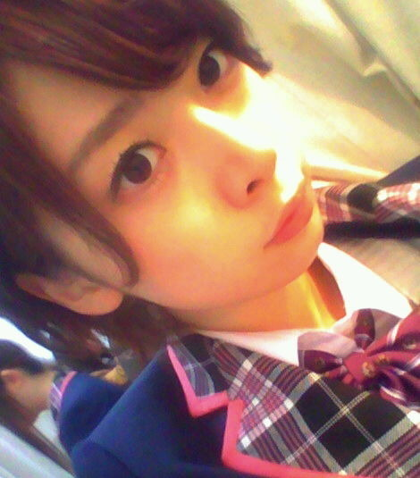

| 2012/02 06 Mon | 橋本奈々未 (´_ゝ｀) 刺身が食べたい |
おはようございます！橋本です。
今日は東京雨ですね〜(>_<)
昨日の乃木坂ってどこ？では
島田秀平さんに
乃木坂メンバーの手相を見て戴いたんですが
手相ってこんなに当たるんだなって
びっくりしました！笑
パッと手を見せたとき
中指と薬指がくっつく人は
疲れているらしいです！
気をつけてください！
それにしても…
先週匂い嗅ぎ分けからの
アブノーマル線…
なんか…やだ…笑
乃木坂の詩と個人PVのダイジェストも
公開されましたね！
乃木坂の詩では
私が珍しく運動してます！
南流石先生に振り付けを、
そして監督もして頂きました！(*'-')
本当にお世話になっています(;_;)
ありがとうございます！！
個人PVではあの三木聡監督と
お仕事することができました！！
本当にありがとうございました！
２日間で全カット撮影したんですが、
あの２日間で私はかなり強くなりました。
多分もうどんなお仕事も
へっちゃらです(^_-)笑
この辺については
まだ話せないことも多いので
22日以降また改めて書こうと思います♪

顔がひきつった私と
微かに写り込むさゆりんご(*⌒▽⌒*)
みなさん、ブログに関して質問です！
短文でも頻繁に更新するのと
長めの文章で更新の間隔が空くの
どちらがいいですかね？(>_<)
ブログなかなか更新できなくて…
ごめんなさい(>_<)
今日はこれからMusic Japanに
お邪魔してきます！
がんばります〜〜〜！！！！
今日も１日頑張りましょう♪♪